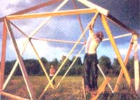
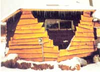
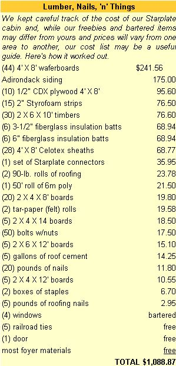

Would you like to build yourself a small, temporary home for a little more than $1,000?
Like so many other home builders, my wife, Sherrie, and I needed a quickly and easily built shelter to live in while our permanent house was being constructed... but we wanted one that was sturdy enough-and of a suitable design-to be used later as a workshop, small barn, or guest house. It had to be inexpensive, since most of our funds had gone into a down payment on our land; but with winter coming on, it also had to be warm and windtight. The question was, what could we put together with these qualifications?
A neighbor's garage, built with Starplate connectors, was our inspiration. After a speculative look at the triangular walls, Sherrie decided that the pentagon-shaped dome (actually a truncated icosahedron having fifteen sides) had potential as a heat-efficient, cozy home with a loft.
Now, the loft idea was intriguing, but, as far as I knew, Starplate buildings weren't designed to be fifteen feet high, allowing for two floors. The eleven steel plates that come in the kit are designed to bolt to the ends of six-foot 2 X 2's or eight-foot 2 X 4's. Could they handle ten-foot 2 X 6's?
We called David Hamel, engineer and inventor of the Starplate connectors (which are now made by United Steel Products of Montgomery, Minnesota), to find out. "Nobody's ever tried building a house with them," he told us. But, we asked, if the roof peak was supported by an oak post, why couldn't it work? "Either that, or run a cable around the eaves to tie the five roof struts together," Hamel suggested. Otherwise, he didn't recommend anything larger than a nine-foot strut. We considered the risks and the options... and decided to go for ten-footers.
[EDITOR'S NOTE: Norm and Sherrie were fortunate to live in an area where the building code requirements present few problems. They needed a permit from the town in order to put up a building, and an inspector checked their wiring, but they had no other stringent rules to follow. Whatever you do, check with your local inspector-call the town clerk to find out who the correct official is-before making extensive plans or buying materials.]
We used our VW camper to truck the struts to our building site: 20 ten-foot 2 X 6's for the walls, and 5 twelve-foot 2 X 6's for the roof (the extra length was to accommodate the eaves). Drilling holes through the 6" width of the timbers, 1-1/2" from their ends, was easy as long as we were careful to keep the drill lined up properly, and assembling the roof was like putting together an adult-size Tinkertoy set. In fact, the back-to-childhood nature of the construction attracted a number of onlookers who wanted to participate!
By the time we had the timbers bolted together, there were enough hands to lift the entire frame and set it on its base.
The foundation for the cabin was nothing more than five railroad ties laid right on top of the ground and leveled with flat rocks. No holes. No cement. No blocks. The cabin has hunkered down on those ties for two years now, and hasn't budged despite the fury of mountain winds and winter storms. [EDITOR'S NOTE: The Starplate instruction booklet shows how to erect a building on the ground, on a wooden frame, on posts and footings, or on a concrete slab, according to your needs.] The base struts are nailed to the ties, which also serve to support the floor joists. We laid heavy plastic sheeting on the joists as a moisture barrier before laying down the subflooring.
Templates supplied with the kit's instruction manual made simple work of cutting the angles for the bracing nailers. These additional timbers were fitted between the main struts to support the side and roof panels. Since the frame is somewhat flexible before the wall panels are applied, the measurements are less precise than those found in conventional frame construction. We soon discovered that the best procedure was to tack the 4' X 8' waferboard sheets right on the triangular frames and mark them for cutting. There was very little waste: The scrap pieces fitted neatly into the various little corners still left to be covered. Roofing cement, liberally applied, made an airtight seal along the seams before we applied the felt tar paper to the walls and the roof.
Once we had the waferboard secured to the struts and nailers, it dawned on us that we were building a cabin of considerable strength. When four hefty men climbed on the roof and it barely shivered, we realized that, in addition to simplifying and speeding up the process of construction, the metal plates at every joint were distributing the load through the entire structure. We decided a center post was unnecessary, so we dropped the idea.
We made a double-paned window by sealing together two flea-market storm windows. Naturally, any opening in an angled wall needs careful sealing, and we found that going twice around the windows with caulking provided good waterproofing protection.
Although one of the options offered in the instruction manual is a "square front" wall to accommodate a door, we chose not to use it. We decided it would be wiser to gain a bit more space by adding a 4' X 8' entrance-way on the southeast wall and then building the door and several windows into it. This would make the cabin roomier and would protect the interior from icy blasts whenever the door was opened in winter; meanwhile, the southeast-facing windows were a welcome feature on cold sunny mornings.
Tying the frame of the foyer to the angular walls of the cabin was tricky, but once the floor frame was squared off with the base strut and the corner posts were braced in a plumb position, we had only to extend horizontal 2 X 4's to the cabin walls and mark them for cutting. The angles weren't perfect, but they worked.
We made sure to put headboard insulation in the entranceway floor; otherwise, its 32 square feet could make the room uncomfortably chilly. After all, winter nights here in upstate New York can reach -20°F.
The ten-foot sides of our shelter gave us about 178 square feet of floor space. This, plus the entranceway's 32, gave us a total of some 210 square feet of living space: admittedly, not much for two people. The roof peak now soared over fourteen feet above the center of the room, however, and there seemed to be ample room for a sleeping loft. To avoid putting a load on the cabin's nonvertical walls, we first shored up the main floor to support extra weight, then constructed a 10' X 10' loft frame and raised it to sit on top of seven-foot-tall 4X4 posts. Flooring for the loft was then extended with extra plywood and bracing to fit out to the pentagonal walls. An opening was left for access to the upper area via ladder. The additional room thus created gave us another 153-1/2 square feet of living space for a much-needed bedroom and office, which greatly enhanced the usefulness of the shelter.
Odd spaces left by the roof rafters and nailers were fitted with 6" fiberglass insulation and covered with inexpensive Celotex panels. (The walls did fine with 3-1/2" batts of fiberglass.) Cutting and fitting the fiberglass was no problem, but handling the 4' X 8' Celotex panels in the small loft space did present a challenge. We finally cut all the panels on the ground floor, then handed the pieces up to the loft crew to be nailed in place.
We were fortunate to have a friend with previous experience who directed the application of our 90-pound roll roofing so that it was done correctly. While less carefully constructed buildings lost their tops to our fierce winds, the Starhut's roof held firm... and the building itself has endured near-hurricane-force gales night after night with hardly a quiver. The angled walls of our Starplate special seem to split those winds in two.
The siding party was composed of a computer programmer, a cook, two former nuns, an army major, and a salesman... but despite the lack of an experienced professional carpenter, we managed very well. After we sealed the seams and applied the tar paper, we started nailing on what's known around here as "Adirondack siding": oak slabs with one edge trimmed. [EDITOR'S NOTE: By an odd coincidence, it's called Carolina siding hereabouts... and no doubt it's known as Rocky Mountain siding along the Great Divide!]
Our plan was to apply the siding first to the walls that leaned outward at the base; it should then be a simple matter to trim off the ends and lay the siding on the walls that leaned inward , allowing that oak to extend an inch or two over the ends of the first-applied slabs. Actually, as it turned out, a snowstorm caught us before we could get the first day's siding trimmed... and there the project was left for the winter. We moved in, just the same.
As of this writing, we're still living in our Starplate cabin. Apparently, the unfinished siding hasn't affected the building's heat efficiency, because it takes a minimum of firewood to keep the place warm. When winter night temperatures are below zero, we keep the stove going around the clock; when it's a bit less frigid, we let the fire go out at bedtime, then simply rebuild it in the morning. An air-circulating fan blows the heat around, and within ten minutes we're sitting down comfortably to breakfast.
A few feet away, our under-construction pole home awaits windows, doors, and insulation... elements we can purchase as our budget permits and install at our own pace. We don't require luxurious quarters, and our inexpensive, snug Starhut allows us the real luxury of paying as we go on the permanent home. When the time comes, it'll be easy to connect the electrical and water lines to the new house and convert the cabin into an insulated, heated workshop.
If we had it to do again, we feel the only change we'd make is perhaps to add light and headroom by putting a dormer window in the loft. We've found ourselves using the office space more than we'd anticipated, so the expense of a skylight or window would have been justified.
And although there's no precedent for it yet, I think you could put up a Starplate structure that used twelve-foot struts. Our domed shelter has proved itself to be completely sturdy through the roughest weather, without a deep foundation, a centerpost, or a cable around the eaves. In fact, we're so pleased with our home that we've gone on to use Starplate connectors for a greenhouse, a tractor garage, a pony barn, a woodshed, and a garden gazebo. We feel it's the ideal answer for the beginning homesteader who wants to settle on his or her land and be free of rental payments at last.
EDITOR'S NOTE: Starplate connectors are available in many areas, but if you can't find them where you live, you can order a set of 11 for $39.95 postpaid from Homesteaders News, Dept. TMEN, P.O. Box 517, Naples, NY 14512.
|
 Although the job of building with Starplate connectors may resemble that of assembling an overgrown Tink-ertoy set, the eleven-piece set can be used to construct a workshop, storage shed, small barn, corn crib, or even (as seen here) a super-lovi-cost temporary home! |
 |
 |